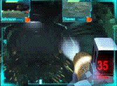

X-COM Alliance is coming in December. . . hopefully. The game is a blend of first person shooter and real time strategy. The game combines the strategy of X-COM UFO Defense with the Unreal Engine to make a new type of game. The player commands a squad of troops (4) with orders such as guard and attack. The game also allows for the player to take control of any of the troops. Microprose made some adjustments on the Unreal IA, so watch out.
After the fall of Cydonia, some troops are returning to earth. They are taken 60 light years away into the middle of a fight between two different types of aliens. The weapons are the same. Remember though, the ship is far from earth, no buying more soldiers and engineers. If the aliens kill all of the scientists or engineers, the game is over. Good luck!
Files
View read me.